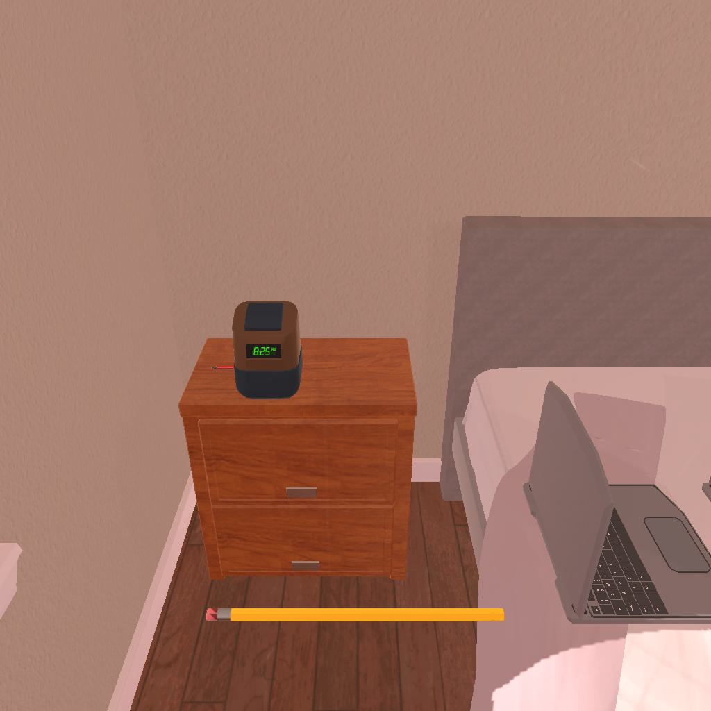

---------------------------------------------------------task: 2---------------------------------------------------------
--------------------------------------------------------------------------------------------------------------------------------------------------------------------
--------------------------------------------------------------------------------------------------------------------------------------------------------------------
Step:--------------------------------------------------------------------------7-------------------------------------------------------------------------------
----------------------------------------
VLM Prompt:
Image1:
**Instruction**
1. Analyze the provided image to identify all visible household objects, focusing on those relevant to the task description "look at pen under the desklamp."
2. Use the analysis of the image and the task hint "The agent must find an object of the desired type, locate and turn on a light source with the desired object in-hand." to answer the question: what is the most reasonable action in the choices for the task description "look at pen under the desklamp"?
4. Decide and write the answer using the template: The answer is: (i): , where i is the real number. If there is no desired object in the image, search every place based on **Initial Observation** to find the object. And if no one is exactly correct, choose a similar answer.
**Initial Observation**
You are in the middle of a room. Looking quickly around you, you can see bed (1-2), dresser (1), drawer (1-11), sidetable (1-2), desk (1), garbagecan (1), safe (1)
**Answer Choices**
(1): go to bed 1
(2): go to dresser 1
(3): go to bed 2
(4): go to sidetable 1
(5): go to drawer 2
(6): go to sidetable 2
(7): go to drawer 3
(8): go to drawer 4
(9): go to desk 1
(10): go to garbagecan 1
(11): go to drawer 5
(12): go to drawer 6
(13): go to drawer 7
(14): go to drawer 8
(15): go to drawer 9
(16): go to drawer 10
(17): go to drawer 11
(18): go to safe 1
(19): open drawer 1
(20): close drawer 1
(21): put pencil 2 in/on drawer 1
(22): examine pencil 2
(23): examine drawer 1
**Answer**
Let's think step by step by following the instructions.
----------------------------------------
----------------------------------------
Original Response:
The task is to "look at pen under the desklamp." From the provided image, we can observe a sidetable with a digital clock displaying "8:25" on it. Below the sidetable, we can see a yellow object that appears to be a pen. There is no visible desklamp in the image, but based on the task description, we need to find a pen and a desklamp. The pen is already located under the sidetable, which is likely next to the desk, as suggested by the presence of the laptop.
Based on the **Initial Observation**, there is no mention of a desklamp, but we can infer that it might be located on the desk or the sidetable, as those are common places for a desklamp. Since the pen is already under the sidetable and the task hint suggests that the agent must find an object of the desired type (the pen) and locate and turn on a light source with the desired object in-hand, the most reasonable action would be to pick up the pen and then look for the desklamp to turn it on.
However, none of the answer choices directly mention picking up the pen or turning on a desklamp. The closest action that aligns with our analysis would be to go to the sidetable where the pen is located. The sidetable in the image could be either sidetable 1 or sidetable 2, and since there is no clear indication of which one it is, we should pick the one most closely associated with the desk, assuming that's where the desklamp would be.
The answer is: (6): go to sidetable 2.
----------------------------------------
----------------------------------------
>>> Refine Original VLM Response and Get Pure Action: go to sidetable 2
----------------------------------------
-----------------------------------------------------------------
Running time: 11.31706190109253 seconds
Total Money: 0.5751099999999999
-----------------------------------------------------------------
-----------------------------------------------------------------
Text Observation:You arrive at loc 6. On the sidetable 2, you see a pillow 1, a desklamp 1, a keychain 1, and a creditcard 1.
-----------------------------------------------------------------
UNSUCCEED